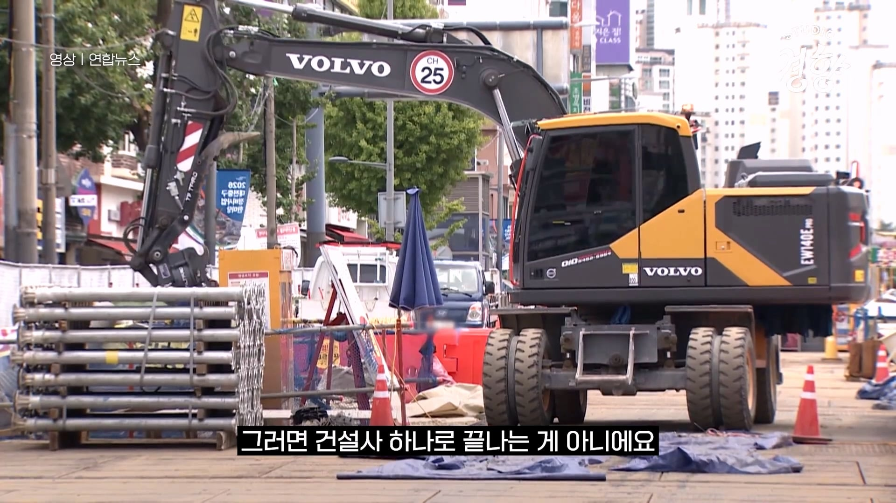
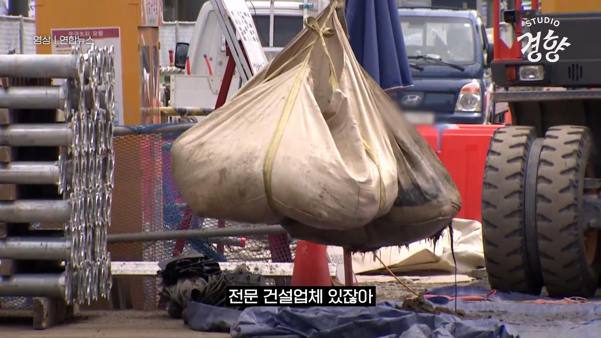
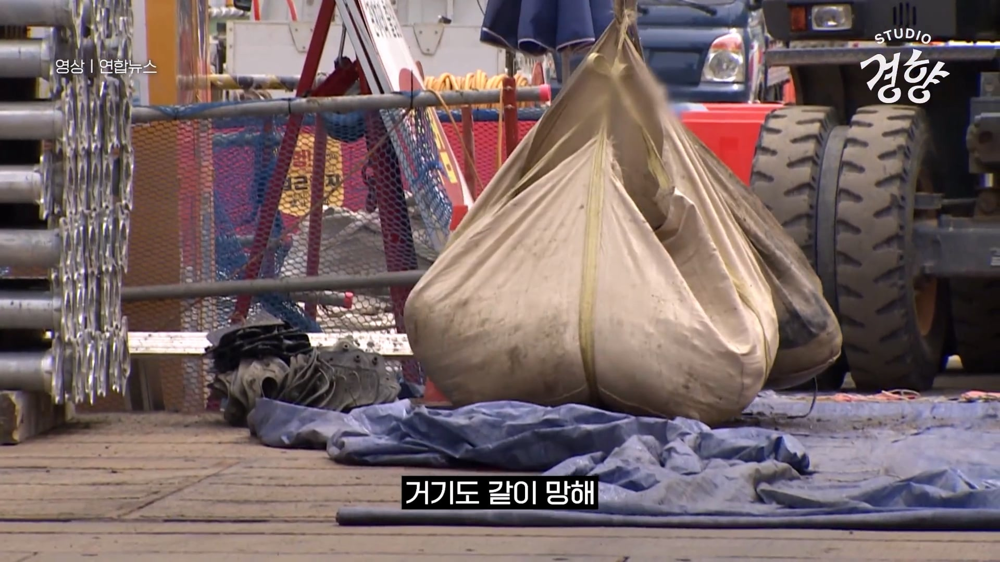
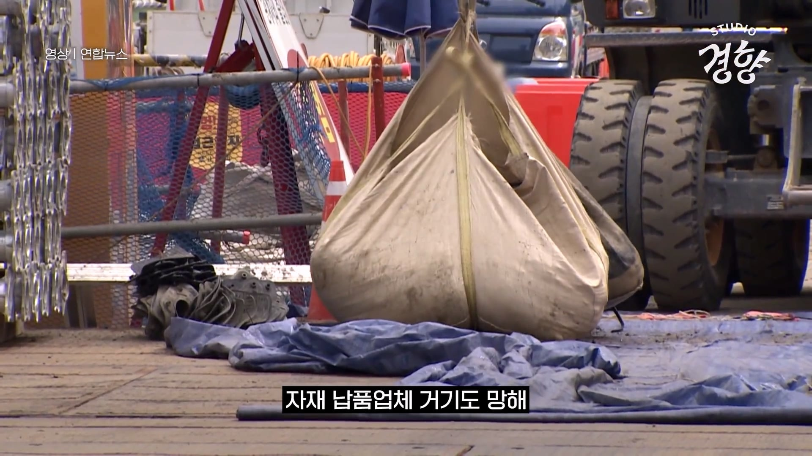

64 · 37 · 3 시간 전 · 원문




수집 당시 댓글 4개
파송송심영탁 · 11 일 전
규모있는 산업중에 안 그런게 있음?
붐업단2 · 11 일 전
망하면 되잖아 그럼
제라타 · 11 일 전
보통건설호황기가 우리가 크게 느낄수있는 호황이라던데
손흥민이 · 11 일 전
백종원은 왜 안살리냐?
개도 망하면 하청업체 다망해 ㅋㅋ
규모있는 산업중에 안 그런게 있음?